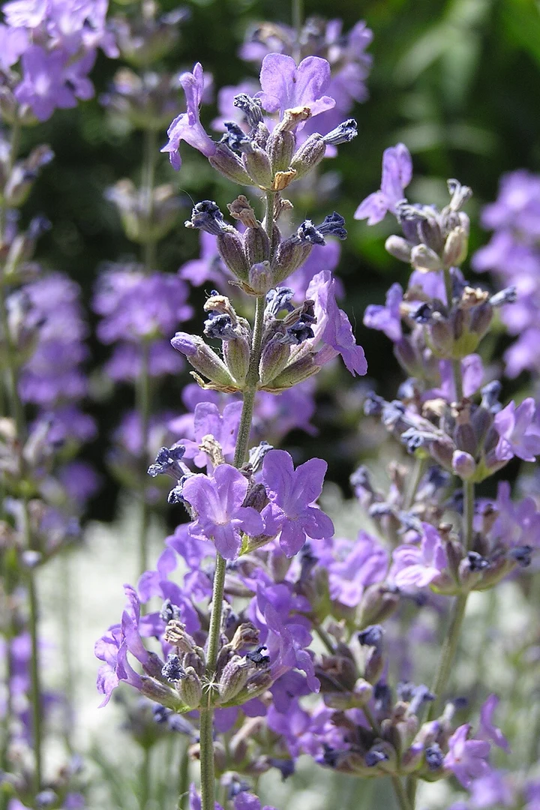

The plant calling you today
Tap to reveal its meaning
Your plant stays here until tomorrow.
The Plant Calling · Free daily oracle card deck
One plant is meeting you today. Let its form, history, and living way offer a grounded invitation for reflection.
Take one slow breath. Ask which plant has something to show you, then draw a card and carry its message into your meditation.

KELA
Messages from the TreesOne plant · One day
Feel the ground beneath you, ask which plant is calling, and take one slow breath.
Carry its invitation with you until tomorrow.The plant calling you today
Tap to reveal its meaningLocal preview: cycle through all 20 plant cards.
The living garden
These twenty meanings draw gently from plant histories, folklore, symbolism, and observable ways of growing. Each card turns that inspiration into an original KELA reflection.
They do not claim universal, Indigenous, religious, supernatural, or medical authority. No card is advice to ingest or apply a plant. Keep what opens useful reflection; your choices remain your own.
The working deck
Meet the complete first Plant Oracle deck. Each plant holds a different way of returning to yourself.
A grounded oracle
Your plant is drawn in your browser. No name, account, or private question is collected.
Your draw stays until tomorrow, giving its invitation time to take root.
The card is a prompt for attention—not a prediction, diagnosis, treatment, or command.